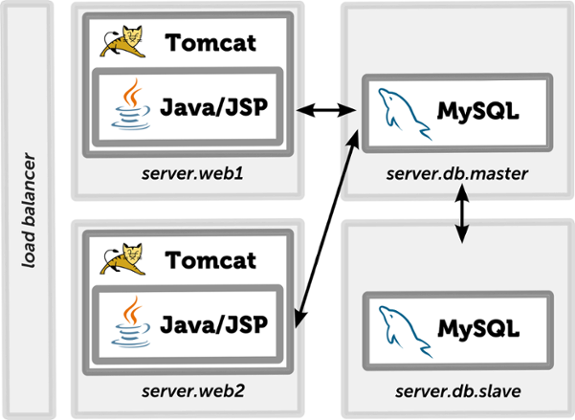
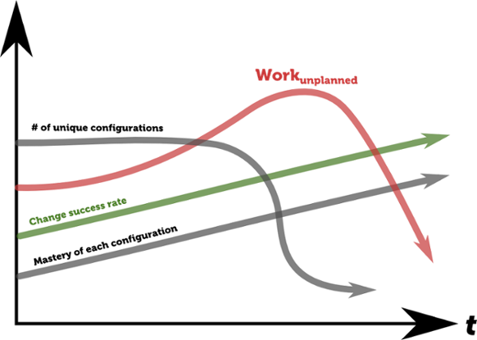
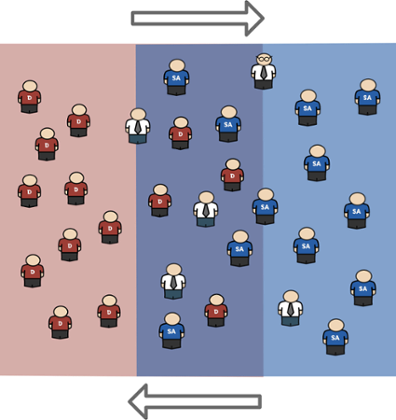

People have different background, skills, interests and preferences
Most of the problems have many (sub)optimal solutions
People solve problems differently
All that maps to a variety of solutionsthat actually work
All polyglot
"Polyglot" software development is a reality
Major ecosystems build loyal communities around them
Communities accumulate reusable experience
But...
Software needs infrastructure to be DEVELOPED on
Software needs infrastructure to be DEPLOYED on
We need to be able to SUPPORT all of that!
No surprise!
Ops hate Devs!
Destructive
The Unplanned
Unplanned vs. failed
Unplanned vs. unique
Late alignment issues
Stability vs. agility
Why "polyglot" then?
You have no choice!
It brings agility
It brings innovation
It may move you forward faster
And beat your competition!
But...
It needs to be under control!
It needs to bring value!
Not only immediate benefits needs to be considered,
but also operational complexity!
Changing architecture
Local development
Splitting layers
Scaling out
Fail-over

Performance tuning
Maintaining system
Expanding system
What if?
Or even?
Splitting layers
Scaling out
Maintaining system
And so on...
What if you combine?
Polyglot infrastructure is inevitable!
Infrastructure as code
Infrastructure as code
Capture knowledge
Reuse comminuty experience
Automation over documentation
Infrastructure as code
Scripts (level 0)
Provisioning tools (level 1)
Images/Containers (level 2)
Provisioning tools
Puppet
Chef
Ansible
Salt
Provisioning tools
Exist for a long time
Big library of modules
Lets express your architecture changes
Reuse
Virtualization
VirtualBox
AWS
Azure
Google cloud
...
Containerization
Docker
Kubernetes
Mesos
...
Organizations are complex
Infrastructure layers
Infrastructure layers
Developer machines
Development tooling
Server/environment management
Network management
...
DevOps!
Sharing responsibility I
Sharing responsibility II
The focus of DevOps is on automating the tasks performed during the build, QA and deployment stage
The risk of deployment errors is reduced drastically by having a strong automated testing suite, automated deployment workflow, well defined/automated rollback process
Reduce failed changes
Reduce number of unique configs

Don't ignore operations!
Avoid
ShadowOps
DevOoops
Broken communication
Broken communication
Play on the same field

Port changes back to DEV!
The feedback loop
Through configuration management and deploy automation, we can deploy more often and reduce risk
The feedback loop gets shorter
Functionalities are rolled out with higher frequency
Systems are always in a known state
Changes to the system can be simulated and impacts calculated
Internal culture!
C.A.M.S
Culture : People over processes and tools. Software is made by and for people.
Automation : Automation is essential for DevOps to gain quick feedback.
Measurement : DevOps finds a specific path to measurement. Quality and shared (or at least aligned) incentives are critical.
Sharing : Creates a culture where people share ideas, processes, and tools.